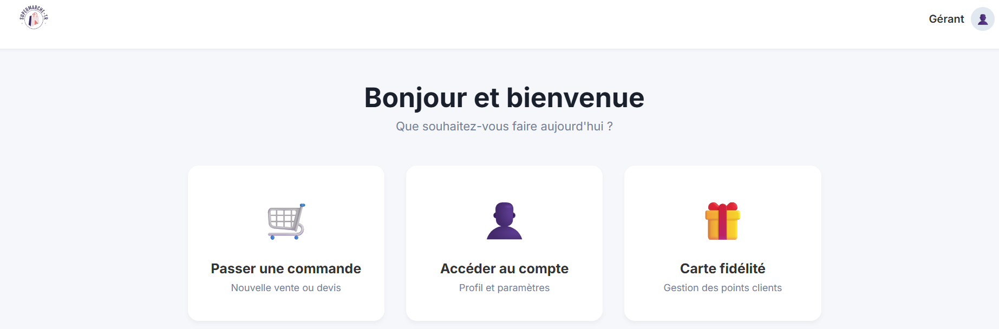

SUPERMARCHÉ EN LIGNE

LE PROJET
Développement complet d'une plateforme de vente en ligne type "Drive". Gestion du catalogue produit, panier client et processus de commande.
POINTS CLÉS
- Base de données : Modélisation complexe (Produits, Catégories, Commandes, Clients).
- Back-Office : Interface administrateur pour gérer les stocks.
- UX Client : Ajout au panier dynamique et historique de commandes.